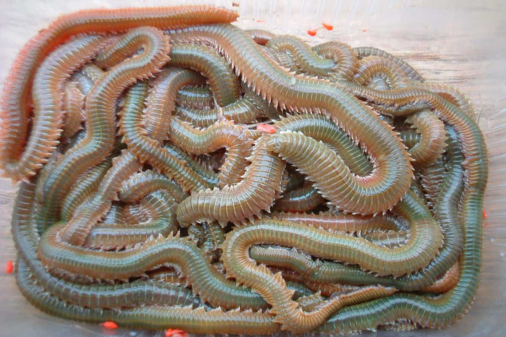
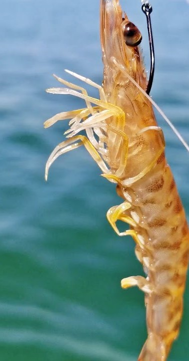
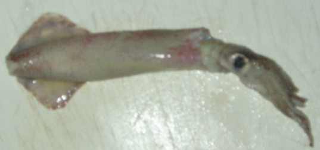
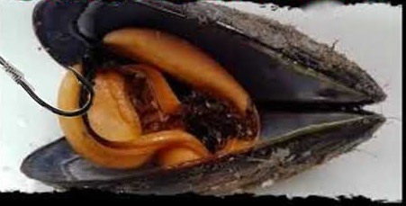

Utensilios de pesca recomendados
A continucion se le mostrará una lista de utensilios que recomendamos junto un enlace a la web de compra
Cañas de pescar
Surfcasting
-
Daiwa SWEEPFIRE 42H
Esta es una caña excelente para principiantes,ofrece buenas prestaciones y su precio es de 75 euros
Caracteristicas
- Longitud:4.50m
- Peso:799gr
- Tramos:3
- Accion:100-200gr
-
Kali-Kunnan Nemesis
Es una excelente opción dentro de las cañas económicas,fabricadas en carbono y con 4,20 de longitud
Caracteristicas
- Longitud:4.20m
- Peso:679gr
- Tramos:3
- Accion:100-200gr
-
ORUS SURF YUKI
Esta caña esta pensada para jornadas largas de pesca
Caracteristicas:
- Longitud:4,20m
- Peso:620gr
- Tramos:3
- Accion:100-250gr
Spinning/Rockfisfing
-
Kali Celeste
Esta caña es de las mejores de gama baja en relacion calidad-precio, es perfecta para iniciarse en la pesca a spinning.
Caracteristicas:
- Longitud:2.10m
- Peso:139gr
- Tramos:2
- Accion:5-25gr
-
SHAKESPEARE Ugly Stik GX2
Esta caña supone un salto de calidad respecto a la anterior,esta fabricada en grafito y vidrio
Caracteristicas
- Longitud:2.70m
- Peso:228gr
- Tramos:2
- Accion: 6-15 lb
-
Shimano FX XT 210 M
Esta caña es buena para iniciarse en el spinning,tiene mango de EVA y la accion modereada ayuda con el lanzado,tiene anillas anti enredos
Caracteristicas
- Longitud:2.10m
- Peso:116gr
- Tramos:2
- Accion:10:30gr
-
OLYMPIC GRAPHITELEADER FINEZZA UX GFINUS-832ML-T
Esta caña de pescar es para gente que desea dar un salto de calidad en su caña de pescar para adquirir una de gama alta,esta fabricada con fibra de carbono y fibra de kevlar.
Caracteristicas
- Longitud:2,53m
- Peso:98gr
- Tramos:2
- Accion:3-15gr
Cebos vivos recomendados
Recomendamos los siguientes cebos para la pesca desde orilla:
-
Lombriz:Es uno de los cebos vivos mas usados por pescadores ya que atrae a un monton de especies marinas.Es muy utilizado para la pesca de dorada o lubina.Es un cebo delicado por lo que no hay que dejarlo al sol
 -
Gamba:Otro de los cebos vivos mas usados,son ideales para la pesca en superficie y profundidad media.Suele utilizarse para la pesca de doradas, lubinas y sargos.Hay que anzuelarla viva
 -
Calamar:Casi todas las especies del mar son aptos para ser capturados con el calamar.Es indicado para la pesca de la dorada y lubina entre otros
 -
Mejillon:Los mejillones forman parte de la dieta de una infinidad de especies marinas.Se pueden anzuelar con o sin concha

Cebos artificiales recomendados
Recomendamos los siguientes cebos artificiales/señuelos:
-
Vinilo Pesca Spinning Kit Shadtex
Este señuelo ha sido diseñado para la pesca de depredadores en puestos con obstáculos.
-
CUCHARILLAS GIRATORIAS PESCA WERO NEW
Kit formado por diferentes cucharillas tamaños nº 1 y nº 2
Anzuelos recomendados
Recomendamos los siguientes anzuelos:
-
AZUELO ASARI BLACK TUNA
El anzuelo Asari Black Tuna está recomendado para la pesca de grandes especies.
-
Anzuelos Pesca Mar Dorada Paleta
Estos anzuelos están diseñados para la pesca de doradas con cebo natural
Hilos recomendados
Recomendamos los siguientes hilos:
-
YUKI INVISIBLE 3G
Buen hilo para principiante con una buena relacion calidad/precio
-
SEAGUAR FINAL LINE
La línea Seaguar Final Line es un flourocarbono único en el mercado debido a su marcada elasticidad. Es muy resistente y mantiene invariable la resistencia a la rotura, incluso tras largo tiempo en el agua.
Plomos recomendados
Recomendamos los siguientes Plomos:
-
PLOMO FONDO PORTUGUES
Plomada polivalente para pescar en diferentes modalidades de pesca deportiva como surfcasting
-
PLOMO TUBO ALAS
Plomo de con tubo corredizo especial para la pesca en piedras o llanuras de alguero, por sus alas despega fácilmente del fondo.
Equipamientos con precio mayor a 20 euros
| Código | Nombre | Descripción | Tipo | Precio | Peso |
|---|---|---|---|---|---|
| cp_42H | Daiwa SWEEPFIRE 42H | Esta es una caña excelente para principiantes,ofrece buenas prestaciones y su precio es de 75 euros | Caña de pescar | 75 | |
| cp_os | ORUS SURF YUK | Esta caña esta pensada para jornadas largas de pesca | Caña de pescar | 50 | |
| cp_kn | Kali-Kunnan Nemesis | Es una excelente opción dentro de las cañas económicas,fabricadas en carbono y con 4,20 de longitud | Caña de pescar | 45 | |
| hil_sfl | SEAGUAR FINAL LINE | La línea Seaguar Final Line es un flourocarbono único en el mercado debido a su marcada elasticidad. Es muy resistente y mantiene invariable la resistencia a la rotura, incluso tras largo tiempo en el agua. | Hilo | 27 |
Cañas de pescar con precio mayor a 50 euros
| Codigo | Nombre | Descripcion | Tipo | Precio | Peso |
|---|---|---|---|---|---|
| cp_42H | Daiwa SWEEPFIRE 42H | Esta es una caña excelente para principiantes,ofrece buenas prestaciones y su precio es de 75 euros | Caña de pescar | 75 | |
| cp_ht | Hart Toro Taktik Popping FK | está diseñada para la pesca de popping ligero, pero cuenta con gran potencia para capturar atunes medianos. Permite lanzar señuelos ligeros y medianos con facilidad | Caña de pescar | 145 |
Detalles de cp_42H
| Nombre | Descripcion | Tipo | Precio | Peso |
|---|---|---|---|---|
| Daiwa SWEEPFIRE 42H | Esta es una caña excelente para principiantes,ofrece buenas prestaciones y su precio es de 75 euros | Caña de pescar | 75 |